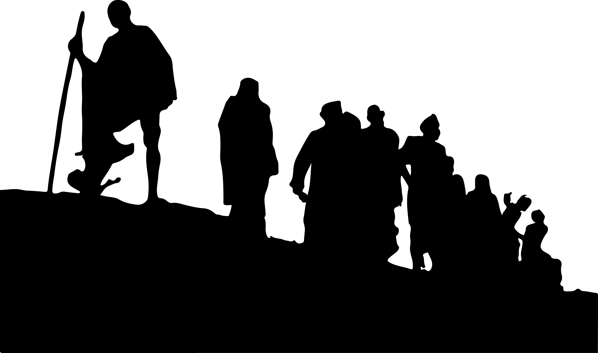

Once in a while, I am inspired to make a piece of artwork. Almost always I have an idea on what I want to create and almost always I don’t have a clear understanding of how to achieve what my crazy mind imagined ‘This will look pretty cool’!
As I have a tendency to underestimate the nature of the hard work that goes into making an aesthetically pleasing piece of art, many times I end up with the bunch of unforeseen problems. Moreover, by the virtue of my procrastinating nature, I would be staring at a very close deadline! This makes thinking about the solution with a calm mind very difficult. Though I could devise some workaround for a high percentage of the problems and it is not advisable to procrastinate, it makes up for a pretty good story!
So, last Wednesday, 26th September, it was announced that the IISc will host a poster design competition on the occasion of 150th Gandhi Jayanti. The deadline for the submission was set at 10 o’clock on Monday, 1st October. Motivated by the thought of making the most unique poster, I jumped on the bandwagon!!
Not surprisingly, conceptualising an art piece is very difficult. Gandhi as a poster subject doesn’t help either. It will be an understatement to say that Gandhi was an influential leader. Each aspect of his life is a worthy candidate for a poster. Unexpectedly, I spent the next two days shuffling through many ideas, reading about different events that shaped Gandhi’s life and the principles that he followed till his last breath. Finally, I convinced myself to make a poster on the historic ‘Dandi March’. I was so excited that before even making the poster, I had a poster description ready.
Delhi houses many statues showcasing different events from India’s freedom movement in the British era. Among them, I found the construct of my poster.
Image: Dandi March statue in Delhi
A few Gimp tricks later, I had the outline of the statue ready. As I wanted a cut out of the silhouette, the next step was to vectorise the image and smooth out the edges. The result was in itself worthy of a poster.
 Image: Silhouette of the statue after smoothing of edges
Next straightforward thing to do was take a print out and cut the outline precisely. Chart paper is easy to cut out when you have a sharp cutter. A few slices here and there and the cutout was ready for my experimentation.
Image: Cutout of the Silhouette of the statue
I had an initial idea about using the salt somewhere in the process. I remembered kids using salt in their DIY posters. After an hour-long thinking, I made a rather tricky decision. I applied glue only to the part where freedom fighters are standing in the poster. Next, I started sprinkling salt on the gluey area hoping that it will stick there.
Image: Glueing salt to the poster
Oh Boy! I was wrong! Salt stuck to the paper but only partially! I realised it after I kept it in the sunlight for drying. Salt was very unstable on the poster. Small salt flakes were peeling off the poster. Another problem was that I could see the colour of the background paper through the salt. Instead of a poster, I was looking at a gluey mess now. I had to go for another coat of salt if this was to look any better and that’s what I did. That could potentially fix the see-through problem. I could not do anything except wait and watch.
I also needed a different texture for the bedrock. I took out my bike and went for a ride around campus. I found I was looking for. A soft grey mixture of sand and cement at a construction site. I packed it in a container in adequate quantity, went for a cup of tea and back to business. The mixture was slightly moist due to rain on the previous night. So, kept it in sunlight for drying it out alongside the poster. After half an hour or so started glueing process with the mixture. By the time I kept it for drying it was already afternoon.
A quick lunch later, I found myself thinking about the problem of scaling. I was also becoming a bit impatient because the deadline was the next morning. I had an intuition that a strong fixative solution should solve the issue. I decided to pay a visit to a nearby art shop to take a second opinion. Though the visit was fruitful, I managed to waste almost four hours there. All these because my bike’s battery decided that it was the perfect time for dying. All these led to a very adventurous afternoon but that’s a story for some other day.
By the time I was back in my hostel room with a fixative, it was already evening. I was worried that I might need a second coat for the mixture as well. It is frustrating to experience Murphy’s law in real life. Not only did I need that second coat, a slight drizzle in the afternoon has caused the entire poster to become slightly moist. Sun was already below horizon now and any hope of drying it out in the sunlight next day was out of the question due to the deadline in the early morning.
After a few calls to my friends, I was able to find and borrow a hair dryer. A faulty hairdryer!! Lucky for me, I have a toolkit to tackle this kind of situation. From opening the hairdryer to removing the faulty switch and reassembling it back took less than fifteen minutes. Finally, things started going north from there. I kept my poster under the hairdryer. After the salt dried out, I dropped a few drops of black watercolour on it. Salt absorbs the watercolour quickly and spreads it evenly throughout.
Image: Poster under the hair dryer
After an hour or so, the cutout was ready for the final fixative layer. While the cutout was absorbing the fixative solution, I quickly cut a blue chart paper of A3 size. Stuck the cutout on the blue sheet with the help of a strong adhesive as the cutout had become bulkier. I went for a tea thinking about the whole day and while coming back grabbed a wooden stick. Polished the wooden stick, cut it and fixed it in place of Gandhi’s stick. A quote from Gandhi in my fancy handwriting and the poster was ready for submission.
Image: Final poster
I also had to write a description of the poster describing the thinking behind the art piece. At 3 AM, I was almost asleep when I wrote the description.
In the year 1930, a 61-year-old thin man walked 384 kilometres in 26 days.
With a pinch of salt, he shook the foundations of the British Raj.
Gandhi!
This poster showcases the historic Dandi March. The significance of the event is realised in the poster by making the silhouette figure with actual salt!
Instead of painting a stick, actual wood is used for Bapu’s iconic stick. Our own IISc’s soil serves as the ground.
Quote by Gandhiji rightly summarises the entire event and thus the poster.
Wish you a very pleasant Gandhi Jayanti!
Regards,
Nihesh.
Two days later, I found myself on the foyer of the faculty hall of the main building, receiving the best poster award from the director of the Indian Institute of Science!!!